Cloud detection over snow and ice surfaces: Summit Camp, Greenland
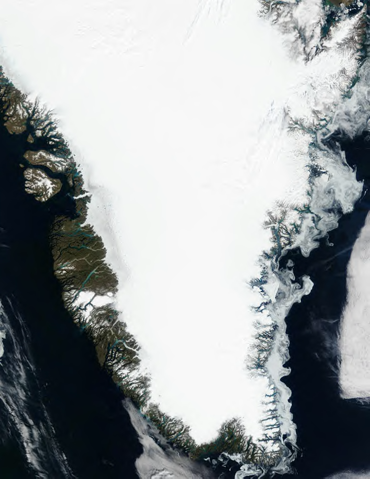 MODIS Level 1b, true color composite, Greenland, July 7, 2002 |
John Maurer {% include address.ssi %} This paper was written as part of a graduate course ("Remote Sensing of the Atmosphere and Oceans") taught by Prof. Irina Sokolik in the Program in Atmospheric and Oceanic Sciences (PAOS) at the University of Colorado at Boulder. May, 2003 The performance of the MODIS cloud mask algorithm over snow and ice surfaces is investigated in this paper. Results from MODIS are compared against ground measurements collected by Sandra Starkweather, a Ph.D. candidate in the Department of Geography at the University of Colorado at Boulder. Starkweather collected sky camera images and ceilometer data at Summit Camp, Greenland (72.5° N, 38.5° W, 3,053 m elev.) during the summer 2001 and 2002 field seasons. Several MODIS scenes were selected over this region for comparison against the ground data. |
Introduction • Instruments • MODIS Cloud Mask Algorithm • Comparison with ground data • Conclusions • References
Location, topography, and the exchange of radiant energy between the sun and Earth ultimately determine weather. Absorbed, reflected, and emitted radiation are the driving forces causing temperature fluxes, ocean currents, wind, and evaporation, which in turn becomes precipitation. And since climate is the study of weather at timescales ranging from a few weeks to decades and beyond, an understanding of the Earth's radiation budget is critical to climate research.
The transfer of energy between the sun, Earth, and space remain in constant equilibrium, as dictated by thermodynamics (i.e. energy cannot be created or destroyed). Energy coming into this system is supplied by the sun, 98% of which is in the wavelength region of ~0.3 - 3.0 µm. Solar irradiation, furthermore, is only partially absorbed by the Earth while the rest is immediately reflected back into the sky. The fraction of solar irradiation reflected back into space is termed the "albedo" and is highly variable depending on the surface type and intervening atmosphere, especially in the presence of clouds. Owing to their large size parameter, cloud particles are highly reflectant across the solar wavelength region and therefore have an important cooling effect on the Earth's climate. Earth maintains equilibrium with its absorbed solar irradiation by emitting longwave radiation back into space, which is also effected by the presence of clouds. Clouds absorb part of the Earth's thermal emission, also having a warming effect on the climate, then.
The Earth's "radiation budget" is thus calculated as the absorbed shortwave radiation minus the outgoing, or emitted, longwave radiation. Obviously, for this calculation to be made, one critical parameter is the presence of clouds. The net effect of clouds on the radiation balance of the surface/atmosphere system is a complex one, determined by the competing effects of shortwave cooling and longwave warming.
{kind=link}
Owing to the high albedo of snow (~0.8) and the fact that a large amount of the Earth's land surface is covered by snow, these regions provide a large cooling effect on the global climate. Below is a map of permanent (blue), relatively stable (green), and seasonal (yellow) global snow cover (Hall et al., 1985):

It is also an important consideration that as the albedo of snow drops when it experiences melt, there is more radiation being absorbed by the snow pack. This creates a positive feedback, causing further melt and thus further decreases in albedo. Given the large influence of snow covered regions on the Earth's climate and its positive feedback response to melting, knowledge of the radiation budget over these regions is critical both to calculations of the global radiation balance and to monitoring the stability of large "permanent" snow-covered regions. Should Greenland melt in a warmer climate, for example, it would lead to a sea level rise of approximately 7 meters (Williams et al., 1993), which would be disastrous to many coastal cities. Ice core analysis has suggested that Greenland did melt during the last interglacial (~120,000 years ago). The maximum sea level rise potential for the Antarctic ice sheet, on the other hand, would be 73 meters (Williams et al., 1993)!
The radiation balance of the polar regions is not yet well understood, however, due to the lack of accurate and well developed cloud climatologies (Curry, 1996). This is largely due to the difficulty of detecting clouds using spaceborne detectors over snow and ice surfaces, where the reflectance and radiant temperatures of clouds and the underlying surface are difficult to distinguish between. Over most other surface types, simple threshold techniques in the visible and infrared are usually sufficient to detect clouds since they are usually both brighter and colder than the surface. These distinctions are no longer valid in the polar regions, however, where the surface may often be as bright and as cold as the overlying clouds. A further difficulty in polar regions is the false identification of clouds due to polar atmospheric temperature inversions, causing clouds to be even warmer than the underlying snow or ice surface.
Another important reason for improving satellite-based cloud detection methods is that many remote sensing applications require clear skies in order to work accurately: e.g. sea surface temperature retrievals, ocean color retrievals, surface albedo retrievals, snow and sea ice mapping, etc. Even the presence of thin cirrus clouds, if undetected, can significantly impact radiative transfer calculations and corrupt various remote sensing data products if not handled properly. For these reasons, cloud masks have been an area of much focus.
MODIS has improved upon previous cloud detection methods owing to its 36 spectral bands spread across a wide range of wavelengths (0.45 - 14.4 µm). This is a large improvement compared to the two bands available on ISCCP instruments (International Satellite Cloud Climatology Project) (0.6 and 1.1 µm) and the five bands available on AVHRR (Advanced Very High Resolution Radiometer). As a result of having a greater number of bands, the MODIS cloud detection algorithm currently applies up to 13 separate spectral threshold tests, which leads to greater accuracies than previously possible using spaceborne remote sensing techniques.
The performance of the MODIS cloud mask algorithm over snow and ice surfaces will be investigated in this paper. Results from MODIS will be compared against ground measurements collected by Sandra Starkweather, a Ph.D. candidate in the Department of Geography at the University of Colorado at Boulder. Starkweather collected sky camera images and ceilometer data at Summit Camp, Greenland (72.5° N, 38.5° W, 3,053 m elev.) during the summer 2001 and 2002 field seasons. Several MODIS scenes were selected over this region for comparison against the ground data.
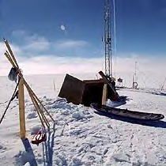
Summit Camp, Greenland (Photo: Starkweather)
In this paper I will first discuss some details regarding each of the instruments used in this experiment. Next, an outline of the MODIS cloud mask algorithm will be presented, along with an overview of the bit values contained in each MOD35_L2 data file. Spectral tests specific to snow and ice surfaces within the MODIS cloud mask algorithm will then be investigated in closer detail. A discussion of the methodology used in my comparison of MODIS to the ground data follows, and results are presented. Lastly, some conclusions from this experiment are drawn and some ideas for continuing this project into the future are offered.
2.1. Total Sky Imager
2.2.
Ceilometer
2.3.
MODIS
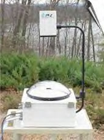
Starkweather employed a Yankee Environmental Systems, Inc. TSI-440A Total Sky Imager (pictured above) at Summit Camp, Greenland for the acquisition of hemispheric sky photographs. Operating during daylight hours only, Starkweather collected images every minute during her field seasons. The TSI saves images in JPEG format and analyzes the raw images for fractional cloud cover, giving output of both thick and thin cloud cover estimations based on user-defined thresholds. Below are sample images of both the raw (left) and processed (right) TSI cloud images (Starkweather, 2002). The black band is due to a bar which prevents saturation of the image by direct sunlight. Thick cloud cover is white in the processed image, thin cloud cover is grey, and clear sky is blue:
| 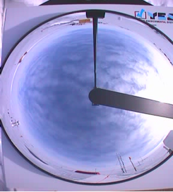 |
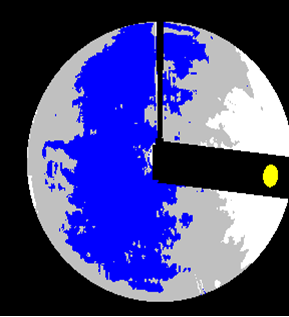 |
The TSI weighs 20 kg (~50 lbs.), is 71 cm tall (28") with base dimensions of 41 cm x 76 cm (16" x 30"). Due to unreliable imaging at the perimeter of the TSI hemisphere, the system has a field of view of approximately 152°. The footprint of the resulting image therefore depends on the base height of the cloud deck pictured, if any. A cloud base height of 1 km would translate to an image that views an area 8 km in diameter, while a cloud base height of 8 km would produce an image that views a 24 km diameter. This can be computed from simple geometry, as illustrated below:
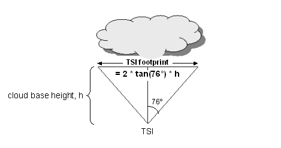
In order to know the cloud base heights so that footprint sizes could be computed, Starkweather also employed a ceilometer at Summit Camp, which is described next.
Vaisala CT25K Laser Ceilometer
The ceilometer used at Summit Camp was a Vaisala CT25K Laser Ceilometer (pictured above), a pulsed diode, InGaAs, lidar-based ceilometer operating at 905 nm with a measurement range of 7.5 km. Measurements of cloud base, or "ceiling", heights were taken every 15 seconds. In the case of thin lower clouds, multiple cloud layers can be detected. The CT25K weighs 35 kg (79 lbs.) and is 134 cm high, 45 cm wide, and 38 cm in diameter. An example of the processed output data is shown in the image below (Starkweather, 2002), with time on the X axis, altitude of the cloud base heights in km on the Y axis and backscatter strength represented according to color:
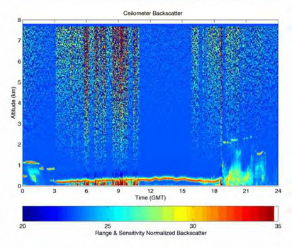
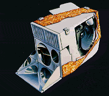
The MODIS instrument (Moderate Resolution Imaging Spectroradiometer) has 36 spectral bands in the UV through thermal infrared spectral regions between 0.45 and 14.4 µm. It is currently aboard both the Terra and Aqua sun-synchronous, polar-orbiting spacecrafts (705 km altitude), though data was used solely from Terra for this investigation. Each MODIS scene has a swath width of 1,354 km and a length of 2,030 km. Resolution is a function of wavelength: bands 1-2 have 250 m resolution, bands 3-7 have 500 m resolution, and bands 8-36 have 1,000 m resolution, each at nadir. The MODIS instrument has been collecting data since March, 2000. It flies over Summit Camp, Greenland every 3-7 days.
Below at the left is an example of MODIS level 1B data (band 1) over Greenland for July 6, 2001 at 14:40 UTC. Its resolution is 250 m. The MODIS cloud mask product (MOD35_L2) for this same date and time is shown below right. It has a spatial resolution of 1 km. Note that the cloud mask product distinguishes between pixels that are cloudy, probably cloudy, probably clear, and confidently clear. This will be discussed in greater detail later on.
| 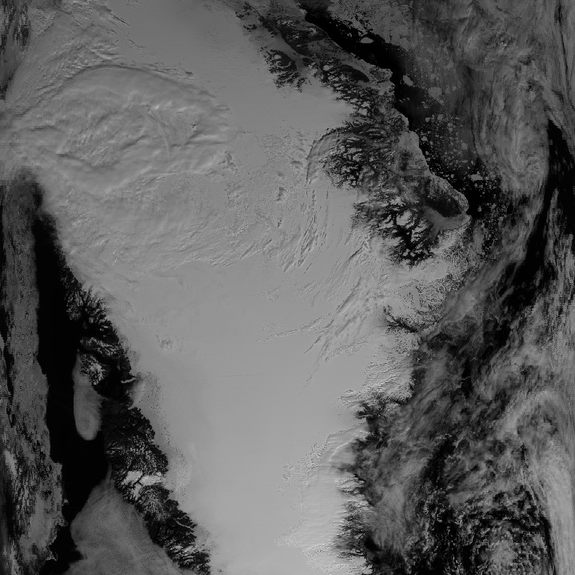 |
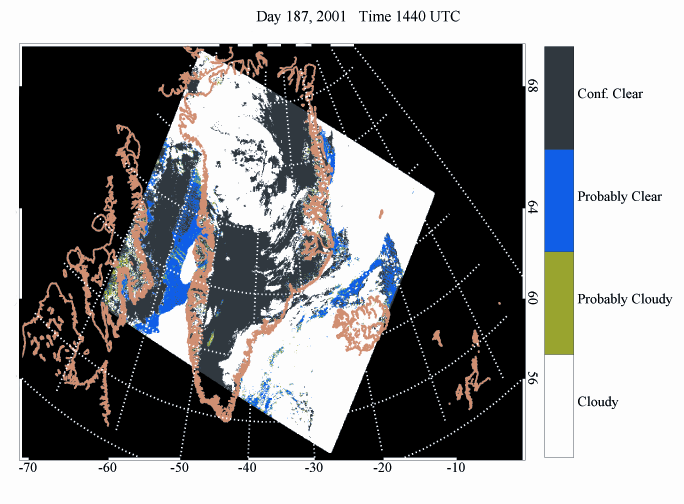 |
3.1. Overview
3.2.
MOD35_L2
data format
3.3.
MOD35_L2 spectral tests over
snow/ice
Because MODIS has so many spectral bands compared to other instruments that have traditionally been used to detect clouds (e.g. ISCCP and AVHRR), the MODIS cloud mask algorithm can combine the results from many spectral tests in order to improve the accuracy of traditional spaceborne cloud detection. 19 out of the 36 MODIS bands are currently employed in the MODIS cloud mask algorithm. These are taken as inputs from the corresponding MODIS Level 1b data file.
The spectral tests that are run by the MODIS cloud mask algorithm can be grouped into five unique groups of tests. There are currently thirteen total possible spectral tests:
| MODIS
cloud mask algorithm spectral tests |
|
| Test
Group |
Possible
Spectral Tests BT = Brightness Temperature, R = Reflectance, # = wavelength (µm) |
| Simple IR threshold tests |
|
| Brightness temperature differences |
|
| Solar reflectance threshold tests |
|
| An NIR thin cirrus threshold test |
|
| An IR thin cirrus threshold test |
|
Which tests are run for a given pixel and what threshold values are used for them depends on the surface type and solar illumination conditions. The MODIS cloud mask algorithm, then, uses the following seven conceptual domains for determining which tests to run on a pixel by pixel basis:
- Daytime over land
- Daytime over water
- Nighttime over land
- Nighttime over water
- Daytime over desert
- Daytime over snow or ice covered surfaces
- Nighttime over snow or ice covered surfaces
A pixel is categorized as "daytime" if the solar zenith angle is greater than 85°, and this information is input from the MODIS MOD03 data set, which contains geolocation data. A 1-km United States Geological Survey (USGS) global land/water mask is used to determine whether each pixel is over land or water. A 10-minute Olson World Ecosystems map determines whether a pixel is over desert. Lastly, MODIS snow and sea ice masks (MOD10 and MOD29 data sets) are used to determine whether a pixel is over a snow or ice covered surface.
Each test is assigned a confidence level between 0.0 (= cloudy) and 1.0 (= clear) depending on its proximity to a threshold value that is predefined for each of the seven conceptual domains listed above. Three values must therefore be defined for this confidence test to work: a maximum value, which defines confident clear conditions, a minimum value, which defines confident cloudy conditions, and a center value, which defines a threshold between either clear or cloudy conditions.
Each of the spectral tests that run on a given pixel are assigned a confidence level using the method described above. The lower the confidence level, or the closer it is to zero, the less confident that the pixel is clear, or "unobstructed." A minimum confidence level is then determined for each group of tests (see table above). The final confidence level for a pixel is determined by taking the Nth root of the product of the results from each group, where N is the number of tests run in a particular group.
Note that using the minimum confidence level for each group of tests is clear-sky conservative. Scientists would rather have the algorithm error on the side of labeling too many pixels cloudy as opposed to potentially missing pixels that have cloud contamination. The approach described in the above paragraph is also clear-sky conservative since the presence of any group confidence level of 0 (e.g. cloudy) will automatically make the final confidence level to be 0 as well. This approach is taken because it is important to avoid cloud contamination to so many other MODIS algorithms and remote sensing applications.
In certain conceptual domains, if the final confidence level is still uncertain
for a pixel, spatial and temporal uniformity tests are also performed in an
attempt to improve the confidence for that pixel. The reasoning behind these
uniformity tests is that clear surfaces have less spatial and temporal variation
than surfaces obscured by clouds. This only holds true, of course, over relatively
uniform surfaces. As a result, these tests are only run over water surfaces.
This was interesting to note since clouds can often be visually recognized
over Greenland since it is also a relatively spatially uniform surface. Clouds
can be seen, for example, in the band 1 MODIS Level 1B image shown above
under the section describing MODIS. As a result, spatial uniformity tests
could probably be used to improve cloud classification over Greenland.
The full title of the MODIS cloud mask data set for the Terra satellite is the "MODIS/Terra Cloud Mask And Spectral Test Results 5-min L2 Swath 250 m and 1 km." The short-name for this data set is "MOD35_L2." Each data file is a 48-bit word, or six 8-bit bytes, of information, totaling 47.6 MB. Each bit, of course, can either equal 0 or 1, the value of which has the meaning of "Yes" or "No" for a particular test or flag. Bits are numbered from 0 to 47. Resolution is 1 km, though bits 32 to 47 are reserved for 250-m visible cloud tests. These sixteen 250-m resolution bits are 0 for cloudy or 1 for clear for the 16 pixels contained within the center of a 1 km pixel. Since they are only based on a simple reflectance threshold they are not recommended for use over snow and ice surfaces.
Most important of the 48 bits, bit 0, tells whether or not the algorithm could be run for a given pixel. If there was invalid radiance data or any missing geolocation or ancillary data, the cloud mask algorithm cannot be run.
Next, bits 1 and 2 give the final classification for each pixel ("unobstructed FOV confidence flags"). Combined, these bits have the following meaning: 00 = cloudy, 01 = probably cloudy, 10 = probably clear, and 11 =confident clear. Bit 1, however, can be used alone for isolating only the highest confidence levels for each pixel: 0 = cloudy, 1 = clear.
Thirteen of the bits represent the results of spectral tests (bits 9, 11, 13-23). These tests can be individually inspected in order to extract further information regarding a pixel. If a pixel is cloudy, was it a high altitude cloud or a low-level cloud, and which spectral tests identified the cloud? If a pixel is labeled as clear, is it still possible that thin cirrus clouds were identified by the algorithm (bits 9, 11, and/or 16)? As previously explained, only certain spectral tests are run depending on the conceptual domain of the pixel. A value of 1 for a given bit, therefore, can either mean that the spectral test was not run or that the test found that the pixel was clear. As a result, it is important to know the conceptual domain of each pixel so that the user can determine which tests were run on that pixel. The conceptual domain of the pixel can be determined from bits 3-7: bit 3 = day/night, bit 4 = sun glint, bit 5 = snow/ice background, and bits 6-7 = water (00), coastal (01), desert (10), or land (11) surfaces. A table of the spectral tests run for each conceptual domain is listed in the MOD35_L2 Algorithm Theoretical Basis Document (ATBD) (Ackerman et al., 1998).
A few of the bits are reserved for future tests that might be added later (bits 29-31).
A table defining each of the bit values within the MOD35_L2 data file is also listed in the MOD35 ATBD (Ackerman et al., 1998).
3.3. MOD35_L2 spectral tests over snow/ice
Given the difficulty of distinguishing snow and ice surfaces from clouds using simple reflectance and/or brightness temperature thresholds, only a few of the thirteen possible spectral tests have accurate enough results to be run for pixels over these regions. Even fewer tests are run over snow and ice surfaces during the night, which is a significant consideration given the long polar nights. Not only do snow and ice surfaces often have comparable reflectances and brightness temperatures to the overlying clouds, they can frequently be even colder than clouds due to inversions in the atmospheric temperature profile, as illustrated in the diagram below (adapted from Ackerman et al., 1998):
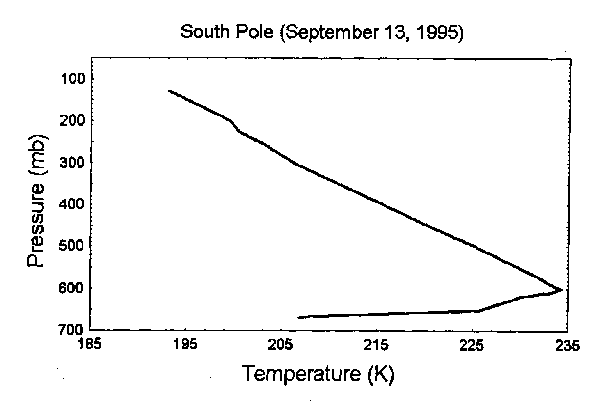
Below is a table of the tests which are run over snow and ice surfaces during the daytime:
| MOD35_L2
daytime spectral tests over snow and ice surfaces |
|||
| Bit
Field |
Spectral
Test |
Description Key | Result |
| 14 |
BT13.3 - BT11 | Identify polar inversions, suggesting clear skies. | 0 =Yes / 1 = No |
| 15 |
BT6.7 | High cloud flag. | 0 =Yes / 1 = No |
| 16 |
R1.38 | NIR cirrus cloud test. | 0 =Yes / 1 = No |
| 19 |
BT11 - BT3.9 | IR cloud test. | 0 =Yes / 1 = No |
|
20 |
R0.66 | Visible cloud test. | 0 =Yes / 1 = No |
| 26 |
BT11 - BT6.7 | Identify polar inversions, suggesting clear skies. | 0 =Yes / 1 = No |
The brightness temperature differences of bits 14 and 26 are based on the weighting functions of the atmosphere at the different wavelengths measured. Since BT11 is located within an atmospheric window, this channel peaks primarily at the surface. BT13.3 and BT6.7, on the other hand, are located in bands that are strongly attenuated by gases (BT13.3 = CO2 and BT6.7 = water vapor) and peak higher in the atmosphere as a result. Because these channels are sensitive to different altitudes, therefore, they can be used to detect polar temperature inversions by selecting the proper threshold values. The detection of a temperature inversion likely suggests the absence of clouds since a cloud would have a cold temperature comparable to the surface and inhibit the inversion.
The brightness temperature difference between BT11 and BT3.9 (bit 19), however, works a little differently. In this case, both channels are placed within atmospheric windows so that their weighting functions are similar. As a result, if the pixel observed is all surface or all opaque cloud, there is a negligible brightness temperature difference. However, if part of the scene is surface and part of it is cloud, then the brightness temperatures from these surfaces differ, causing this bit to have a relatively large difference. This can be shown in the following table (Menzel, 2001), where cloud fractions of 0 and 1 both have no difference in brightness temperature, while partial cloud fractions each show differences greater than zero:
B(T) = (1-N)*B(Tsurface) + N*B(Tcloud)
| Effect
of fractional cloud cover on long vs. shortwave brightness temperatures |
|||
| Cloud
Fraction, N |
Longwave
Window (11 µm) Brightness Temperature (K) |
Shortwave Window (3.9 µm) Brightness Temperature (K) | Tshort - Tlong (K) |
| 1.0 |
220 |
220 |
0 |
| 0.8 |
244 |
267 |
23 |
| 0.6 |
261 |
280 |
19 |
| 0.4 |
276 |
289 |
13 |
| 0.2
|
289 |
295 |
6 |
| 0.0 |
300 |
300 |
0 |
This technique assumes that the surface temperature and the cloud temperature are different, however, which may be negligible or untrue in the polar regions.
When applied alone, BT6.7 (bit 15) can be used to detect high clouds since radiation in this wavelength region is strongly absorbed by water vapor in the atmospheric layer between 200 and 500 hPa and is therefore insensitive to surface radiation. Temperatures that are cold relative to this atmospheric layer are due to clouds.
Lastly, two visible channels are employed in the detection of clouds over snow and ice surfaces: R1.38 (bit 16) and R0.66 (bit 20). This may seem surprising given the poor distinction between snow, ice, and cloud reflectances. R1.38 is effective, however, again because of the weighting function at this wavelength: strong water absorption at this wavelength region limits the radiation from the surface that reaches the top of the atmosphere and the channel is therefore sensitive to reflectance from high altitude clouds. It is important to note, however, that precipitable water is often less than 1 cm over polar regions and at high elevation. This undermines the usefulness and accuracy of this test at high latitudes. This test is not run at altitudes above 2000 m, too, which means it is not run for any scenes over Summit Camp, Greenland (elev. 3,053 m). R0.66 is a simple reflectance threshold that assumes that clouds are brighter than a given threshold value and that the surface is darker than it. This test does not perform well over bright surfaces, so it surprises me that it is used over snow and ice. The two reflectance tests (bits 16 and 20) are not run during the night, obviously.
In sum, these tests seem far from fool-proof for detecting clouds over snow and ice surfaces. Though bits 14 and 26 are great indicators of polar inversions, if such inversions are not present they do not help prevent false cloud detection from the other spectral tests. I doubt the utility of the reflectance tests simply because the differences in brightness values between clouds and snow have already appeared indistinguishable to me in the images I have seen thus far. R1.38 is not even used at high latitudes or high altitudes, owing to the lack of significant amounts of atmospheric water vapor. For this same reason, I also doubt the utility of bits 15 and 26, which are based on the presence of water vapor absorption (BT6.7) as well. This leaves us with bit 19 (BT11 - BT3.9), whose accuracy depends on brightness temperature differences between the surface and the clouds, which does not usually hold true over snow and ice.
4. COMPARISON WITH GROUND DATA
4.1. Methodology
4.2.
Results
Ground validation experiments are inherently difficult due to different spatial and temporal resolutions and sensitivities between the ground and satellite instruments employed. This held especially true when comparing MOD35_L2 scenes with the Total Sky Imager. In order to determine the spatial region to analyze within each MODIS scene, the TSI footprint must first be calculated using the ceilometer cloud base heights. Average cloud base heights must be employed, however, in order to characterize the entire TSI scene. These averages have relatively large standard deviations, owing to the fact that clouds of varying heights usually appear within any given TSI scene, as shown in the table below for the scenes analyzed in this experiment:
| ceilometer
cloud base heights |
|||||
| Year |
Day |
Julian Day | UTC start | Average Height (m) | Standard Deviation of Height (m) |
| 2001 |
6-Jul |
187 |
14:40 |
378 |
89 |
| 2001 |
22-Jul |
203 |
14:40 |
169 |
30 |
| 2001 |
23-Aug |
235 |
14:40 |
109 |
38 |
Partial cloud cover is another complicating matter when computing a TSI footprint: areas without cloud cover will have a larger footprint compared to areas with cloud cover. As a result, the proper footprint to compare with MODIS is difficult to ascertain. A TSI scene with no cloud coverage also makes the footprint size ambiguous since there are no cloud heights from which to compute the footprint. Lastly, the TSI instrument has a circular imaging surface and therefore a circular footprint. I only knew how to create a rectangular/square subset of MOD35_L2 data, however.
A less important consideration in this ground validation experiment is the temporal resolution. MODIS swaths cover a 5-minute time span, while the ceilometer measurements are 15 seconds in duration and the TSI images cover 1 minute. Fractional cloud cover and cloud heights may change slightly between these different time spans, but probably not appreciably so.
MODIS scenes were selected whose nadir was as close to Summit Camp (72.5° N, 38.5° W) as possible for days and times that ground data were collected for. 170 such scenes exist, though only six were investigated for this initial experiment. The scenes selected are listed below:
| MOD35_L2
scenes investigated |
||||||
| Year |
Day |
Julian Day | UTC start | Granule ID | Center Latitude | Center Longitude |
| 2001 |
6-Jul |
187 |
14:40 |
22733522 |
70.69 |
-37.51 |
| 2001 |
22-Jul |
203 |
14:40 |
22831914 |
70.72 |
-37.57 |
| 2001 |
23-Aug |
235 |
14:40 |
23190134 |
68.42 |
-40.67 |
| 2001 |
8-Sep |
251 |
14:40 |
5252561 |
65.64 |
-43.51 |
| 2002 |
22-May |
142 |
14:35 |
10614888 |
66.24 |
-42.82 |
| 2002 |
7-Jun |
158 |
14:35 |
11063483 |
66.14 |
-42.92 |
As previously mentioned and illustrated, the spatial region to analyze within each MODIS scene must be determined from the TSI footprint, which is calculated using the ceilometer cloud base heights and the following equation:
TSI footprint = tan(76°) * cloud base height * 2
These footprints are listed in the table below for the scenes investigated:
| Total
Sky Imager footprints |
||||
| Year |
Day |
Julian Day | Average Height (m) | Footprint (km) |
| 2001 |
6-Jul |
187 |
378 |
3.0 |
| 2001 |
22-Jul |
203 |
169 |
1.4 |
| 2001 |
23-Aug |
235 |
109 |
0.9 |
| 2001 |
8-Sep |
251 |
no clouds |
? |
| 2002 |
22-May |
142 |
no ceilometer data |
? |
| 2002 |
7-Jun |
158 |
no ceilometer data |
? |
Note that these are small footprints when you consider that the MOD35_L2 data is at 1 km resolution: comparison against MODIS will entail very few pixels in these cases, unfortunately. The ceilometer was not in operation during the 2002 dates investigated, so a footprint could not be estimated.
The next step in the comparison was to subset each MODIS scene to the estimated footprint, centered at the latitude and longitude of Summit Camp, Greenland. I was able to use the "EOS Imaging Tool" to view a georeferenced MOD35_L2 scene and to select coordinates with which to subset each scene. Matt Savoie and Siri Jodha Singh Khalsa recently developed this IDL application at the National Snow and Ice Data Center, where it is publicly available free of charge. Though this tool did not have the capability to view particular bits in a georeferenced manner, the first MOD35_L2 byte could be handled as so. Binary arithmetic could then be used to deduce which of the first eight bits in the MOD35_L2 cloud mask data were "on" or "off".
Two other freely available IDL tools, developed by Eric Moody of the MODIS Atmosphere Group, were also employed for creating georeferenced images of each MOD35_L2 scene investigated. The "CloudMaskExtractor" extracted bits 1 and 2 from the MOD35_L2 cloud mask field and output them into their own HDF file. Next, the "BitMapper" was used to create georeferenced images from the HDF files created by the "CloudMaskExtractor", complete with a legend. Though these tools were very useful for creating images, they did not have the capability of subsetting data or to allow any quantitative investigation of the data itself (i.e. getting tables of values for particular pixels).
ENVI (the Environment for Visualizing Images) was able to display images of MOD35_L2 bytes but could not extract particular bits. It was also unable to use the MOD35_L2 latitude and longitude data to create georeferenced images, owing to the fact that the cloud mask field is at 1 km resolution while the latitude and longitude fields are at a 5 km resolution.
Another free IDL tool for viewing HDF-EOS data, "ViewHDF," was also investigated. Developed by Kam-Pui Lee at the NASA Langley Research Center, this tool was able to create images of particular MOD35_L2 bits. Georeferenced images, however, were displayed on a global map, making them unuseful for the investigation of individual scenes.
It is initially satisfying just to see that patterns of cloud cover recognized by the MODIS algorithm are at least changing over time and not entirely covering Greenland. It was suspected that the agreement would be extremely poor, and that cloud cover over Greenland would be falsely detected all the time and over the entire continent, given its permanent snow coverage. Analysis of the spectral tests run over snow and ice surfaces in the section above seemed to confirm these suspicions. Below are images of the MOD35_L2 scenes investigated in this experiment. These images clearly illustrate the changing pattern of clouds (in white) detected by MODIS over the period of July 6, 2001 to June 9, 2002:
| 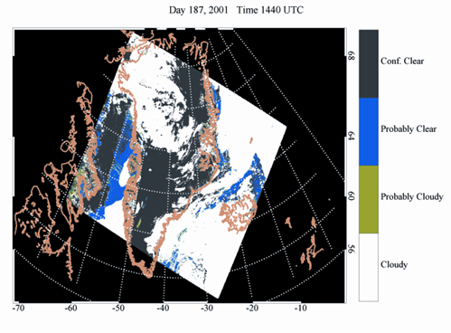 |
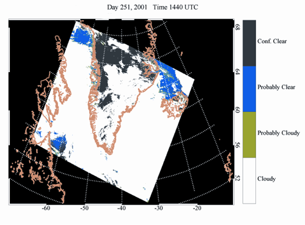 |
| 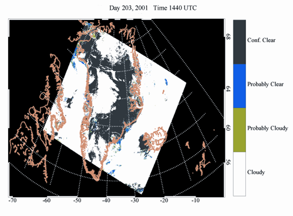 |
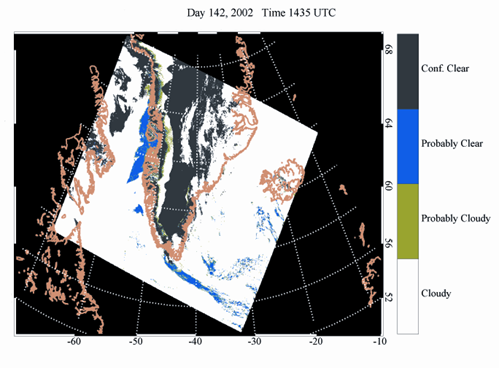 |
| 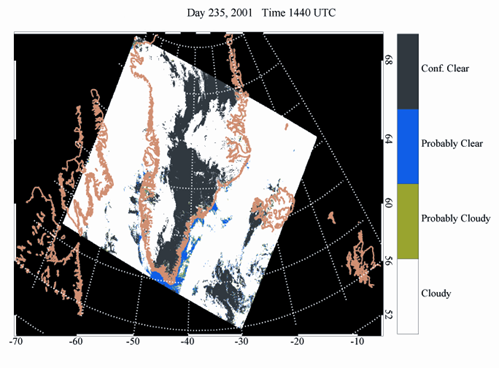 |
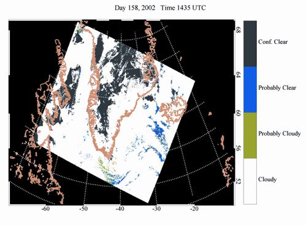 |
It is also promising that there is very little blue ("Probably Clear") or green ("Probably Cloudy") over Greenland in the above images, suggesting that the algorithm has a high degree of confidence despite the snow and ice surface.
The data points investigated in my analysis unfortunately involved mostly very low clouds, meaning the footprint of the TSI was on the order of 1 km, the size of a single MOD35_L2 pixel. This did not lead to very interesting comparisons since cloud "fraction" cannot be determined from a single pixel, obviously. Further, two of my data points were during a period for which there were no ceilometer data, forcing me to guess what the TSI footprint was. The footprint of one day with no clouds also had to be estimated since it could not be calculated. Here is a table of the data points that were studied, with TSI and MODIS cloud fractions compared. Note that the TSI gives thin and opaque cloud fractions, while MODIS does not distinguish between the two:
| Total
Sky Imager (TSI) vs. MODIS cloud cover |
|||||
| Year |
Day |
Julian Day | TSI opaque cloud cover (%) | TSI thin cloud cover (%) | MOD35_L2 cloud cover (%) |
| 2001 |
6-Jul |
187 |
88 |
12 |
100 |
| 2001 |
22-Jul |
203 |
100 |
0 |
100 |
| 2001 |
23-Aug |
235 |
75 |
25 |
100 |
| 2001 |
8-Sep |
251 |
0 |
0 |
0 |
| 2002 |
22-May |
142 |
16 |
84 |
8 |
| 2002 |
7-Jun |
158 |
13 |
87 |
45 |
It is promising, at least, that areas with large fractions of opaque cloud cover in the TSI analysis did indeed come out cloudy in the MODIS analysis (July 6, July 22, and August 23, 2001). And vice versa: the single date with no TSI cloud cover was in agreement with MODIS as well (September 8, 2001). The two low-percentage cloud days are less agreeable (May 22 and June 7, 2002), but without any knowledge of the TSI footprint it is impossible to compare the two instruments properly. In both July 6, 2001 and August 23, 2001, thin cloud cover identified by TSI was apparently detected by MODIS, since the MODIS cloud fraction equals the total (i.e. thick plus thin) TSI cloud fraction. This is good, since the goal of the MODIS cloud mask algorithm is to identify pixels which are entirely free of cloud cover, to prevent contamination in other remote sensing data products.
These results are very preliminary, of course, and demonstrate the need for carrying out more robust comparisons between the TSI/ceilometer and MODIS data. Cloud heights need to be investigated that are greater than a couple hundred meters to produce footprints worth comparison against MODIS cloud fractions. More data points with fractional cloud cover need to be analyzed as well, rather than looking at nearly totally cloudy or totally uncloudy skies. Nevertheless, the results from this investigation seem to show that trends observed by MODIS over Greenland are worth further comparison and could inspire greater confidence in the ability to detect clouds over snow and ice surfaces.
A closer focus on opaque versus thin cloud cover, as separated out by the TSI software, should be investigated in future MODIS comparisons. It may be that the MODIS algorithm is less able to detect thin cloud cover, though this study seemed to suggest it was capable.
TMI images could also be visually inspected against MODIS footprints in order to assess the spatial accuracy of the MODIS cloud mask as well. In other words, even though cloud fractions might be similar for the two instruments, are they finding clouds in the same locations?
Also, this validation method does not investigate the performance of MOD35_L2 during the polar night. Since the TSI cannot be used during the night, a method would need to be devised for validating the nighttime cloud mask. Perhaps the deployment of several ceilometers could be deployed for cloud detection over a given geographic region, or a ceilometer that is light enough could be attached to a UAV (unpiloted aerial vehicle) and flown over this region.
I need to learn more about the georeferencing process since I am not confident of the resulting spatial resolution of the MODIS scenes under investigation. It seemed that pixel values were averaged together after georeferencing the original data, depending on the grid size chosen for the output. If the grid size was chosen to match that of the original data, on the other hand, extra pixels with null values were inserted to fill in locations within the georeferenced image that could not be filled in with the original data. Something else I need to learn is how to equate a certain distance in meters to a difference in latitude and longitude coordinates, so that proper coordinates could be selected for subsetting the MODIS data.
A more robust way of subsetting the MODIS scenes, in general, would be desirable. I hope to experiment with IDL programming this summer to create tools for this purpose. Automating the process would negate the need for creating georeferenced images and manually selecting latitude and longitude points centered at Summit Camp for subsetting each scene. A subsetter is also in the works, I should mention, for incorporation with the EOS Data Gateway (EDG), which might also remedy the subsetting part of this experiment.
Starkweather has identified a total of 170 MODIS scenes that overlap with her ground data. I hope to look at more of these scenes in the near future. I also hope to investigate individual spectral tests within the MOD35_L2 data, rather than only comparing results from bits 1 and 2. This would allow me to assess the performance of each of the snow and ice spectral tests separately.
- Ackerman, S.A., Strabala, K., Menzel, P., Frey, R., Moeller, C., Gumley, L., Baum, B., Seeman, S.W., and Zhang, H. (1998), Discriminating clear-sky from cloud with MODIS: algorithm theoretical basis document (MOD35). J. Geo. Res. Atmos. V.103, Dec. 27, 1998.
- Curry, J. (1996), Overview of arctic cloud and radiation characteristics. J. Climate 9:1731-1764.
- Gao, B-C., Han, W., Tsay, S.C., Larsen, N.F. (1998), Cloud detection over the arctic region using airborne imaging spectrometer data during the daytime. J. App. Meteor. 37:1421-1429.
- Hall, D.K. and Martinec, J. (1985), Remote sensing of ice and snow. Chapman and Hall, New York, 189 pp.
- Harrison, E. F., Minnis, P., Barkstrom, B. R., and Gibson G. (1993), Radiation budget at the top of the atmosphere. In Atlas of satellite observations related to global change. R.J. Gurney, J.L. Foster and C.L. Parkinson, eds., Cambridge Univ. Press, London, 19-38.
- Key, J.R., Schweiger, A.J., and Stone, R.S. (1997), Expected uncertainty in satellite-derived estimates of the surface radiation budget at high latitudes. J. Geophys. Res. 102:15,837-15,847.
- Menzel, P. (2001), Applications with meteorological satellites. World Meteorological Org. Technical Doc. SAT 28 TD 1078.
- MODIS Atmosphere. http://modis-atmos.gsfc.nasa.gov On January 21, 2003.
- MODIS Web. http://modis.gsfc.nasa.gov On April 17, 2003.
- NASA Earth Observatory. http://earthobservatory.nasa.gov On April 17, 2003.
- Platnick, S., King, M.D., Ackerman, S.A., Menzel, W.P., Baum, B.A., Reidi, J.C., and Frey, R.A. (2002), The MODIS Cloud Products: Algorithms and Examples from Terra. IEEE Trans. Geoscience & Rem. Sensing. Oct. 2002.
- Rees, Gareth. (1999), The Remote Sensing Data Book. Cambridge University Press, New York.
- Rossow, W.B. (1993), Clouds. In Atlas of satellite observations related to global change. R.J. Gurney, J.L. Foster and C.L. Parkinson, eds., Cambridge Univ. Press, London, pp.141-163.
- Starkweather, S., Steffen, K. (2002), Greenland Ice Sheet Climatology: An Annual Cycle of Cloud Base Height Measurements at Summit, Greenland. Poster.
- Vaisala Oyj. http://www.vaisala.com On April 17, 2003.
- Wang, X., Key, J.R. (2003), Recent trends in arctic surface, cloud, and radiation properties from space. Science. 299:1725-1728.
- Williams, Jr., R.S. and Hall, D.K. (1993), Glaciers. . In Atlas of satellite observations related to global change. R.J. Gurney, J.L. Foster and C.L. Parkinson, eds., Cambridge Univ. Press, London, 401-422.
- Yankee Environmental Systems, Inc. http://www.yesinc.com On April 17, 2003.
Top of Page • Introduction • Instruments • MODIS Cloud Mask Algorithm • Comparison with ground data • Conclusions • References
© 2003, {% include footer.ssi %}